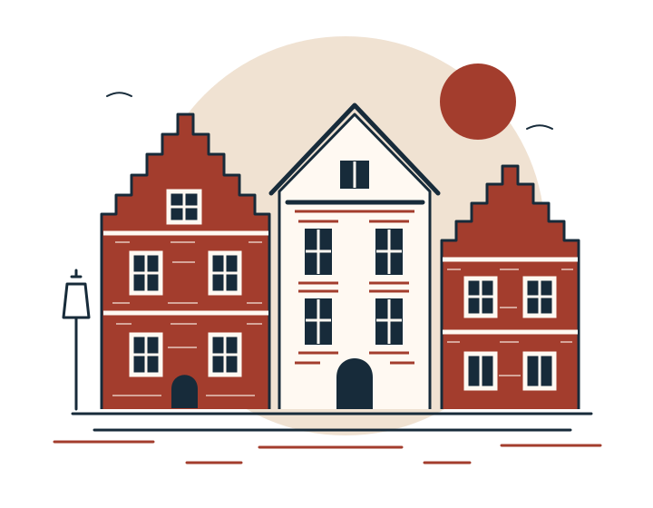
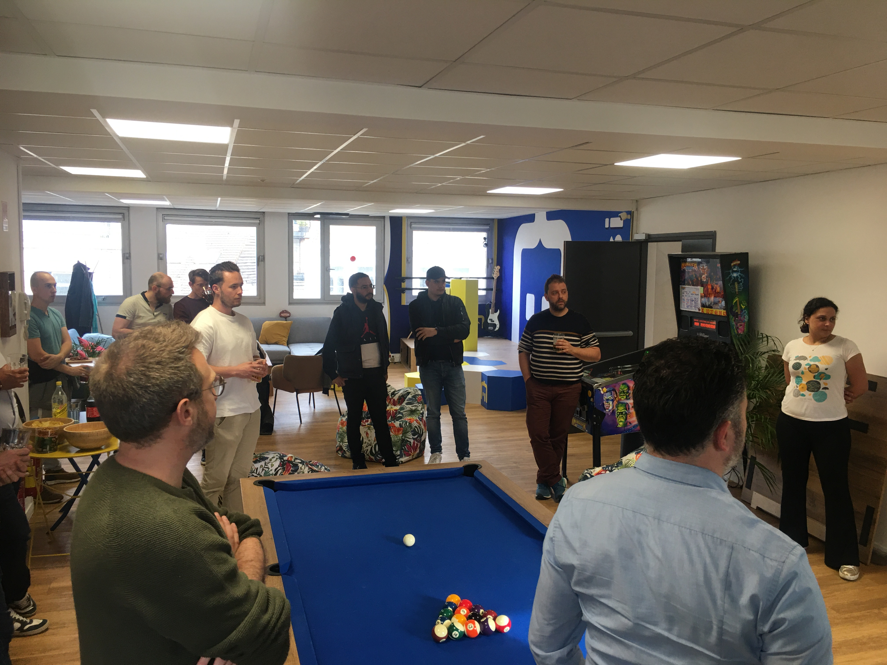
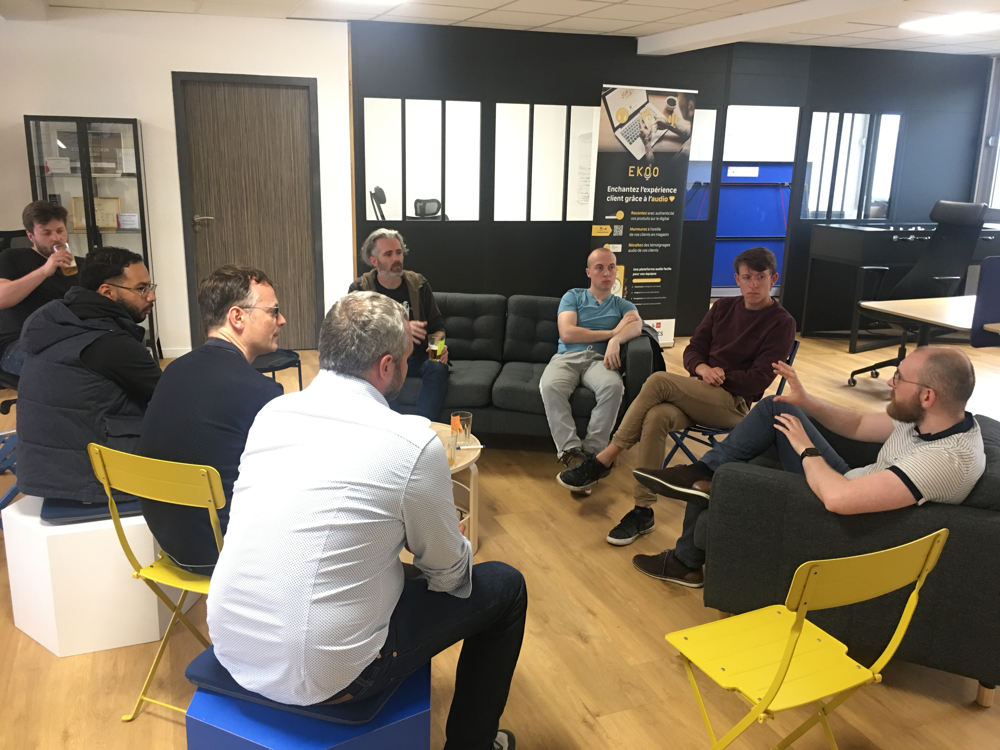
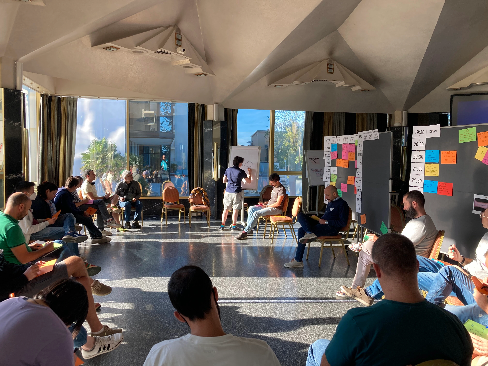
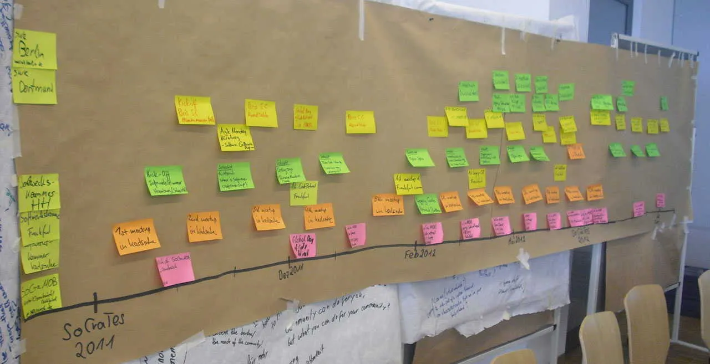
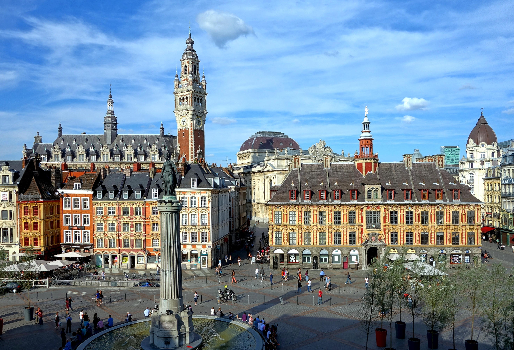
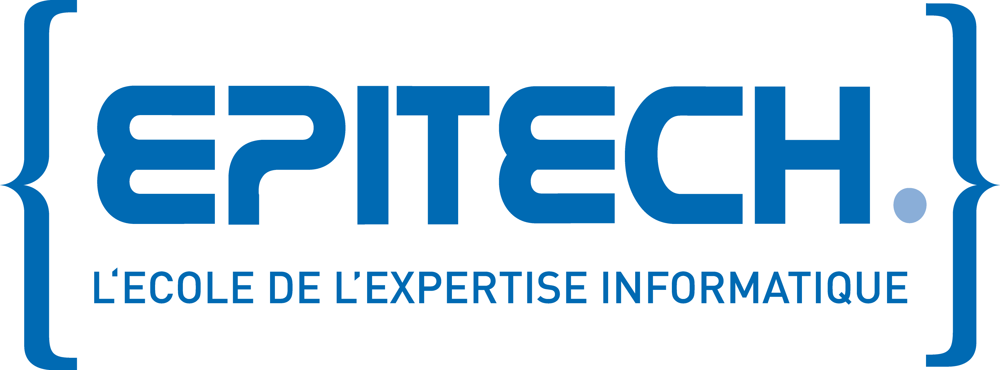

Partager
Mettre en commun nos retours d’expérience et nos pratiques. Prendre du recul, ensemble.
Software Craft & Tests · Première édition
Du code, des idées,
et surtout des rencontres.
Un forum ouvert pour apprendre ensemble, partager nos pratiques et faire grandir le développement logiciel.

L’esprit Socrates
Socrates réunit les personnes qui s’intéressent au développement logiciel, aux tests et à la qualité du code.
On vient partager autant qu’apprendre : des pratiques, des questions et des idées, nourries par les expériences de chacun.
Mettre en commun nos retours d’expérience et nos pratiques. Prendre du recul, ensemble.
Explorer une idée, essayer une approche, coder ensemble. Faire de la curiosité un point de départ.
Échanger entre personnes et parcours variés. Croiser les regards, créer des liens.
Photos d’autres rencontres en forum ouvert, présentées à titre d’illustration.



Le format
Pas de programme fixé à l’avance : les sujets sont proposés sur place par les personnes participantes.
Chacun peut proposer une discussion, un atelier ou un retour d’expérience, et changer de session selon ses envies.
Le petit déjeuner, le déjeuner et des pauses viendront rythmer la journée.

Une question, une pratique, une envie d’explorer : toutes les idées ont leur place.
Les propositions deviennent le programme de la journée, avec les personnes présentes.
Rejoindre les sujets qui vous parlent, participer et circuler librement entre les sessions.
Nos valeurs
Tous les niveaux d’expérience sont bienvenus. Les échanges auront lieu en français.
Accueillir les questions, écouter les points de vue et laisser à chacun la place de s’exprimer.
Débuter ou avoir de la pratique : nos parcours différents enrichissent les échanges.
Apprendre les uns des autres, partager ce que l’on sait et chercher ensemble.
Infos pratiques
Un petit déjeuner et un déjeuner sont prévus, ainsi que des pauses au cours de la journée.
Apporter un ordinateur est encouragé, notamment pour présenter un sujet avec un support visuel.

Et vous ?
Modalités d’inscription à annoncer
Les modalités d’inscription seront publiées sur cette page.
La FAQ
Le programme est construit sur place par les personnes participantes. Les échanges peuvent prendre la forme de discussions, d’ateliers ou de retours d’expérience.
Non. La curiosité, l’envie d’apprendre et de partager comptent davantage que le niveau d’expérience.
Oui. Chaque personne participante peut proposer un sujet au moment de construire le programme.
Les modalités d’inscription seront publiées sur cette page.
Un petit déjeuner et un déjeuner sont prévus. Des pauses viendront rythmer la journée. Les modalités tarifaires seront annoncées ultérieurement.
Apporter un ordinateur est encouragé, notamment pour présenter un sujet avec un support visuel.
L’organisation
Socrates Lille est organisé par Software Craft Lille, avec le soutien d’Epitech.
Contact de l’organisation : à annoncer.

Epitech